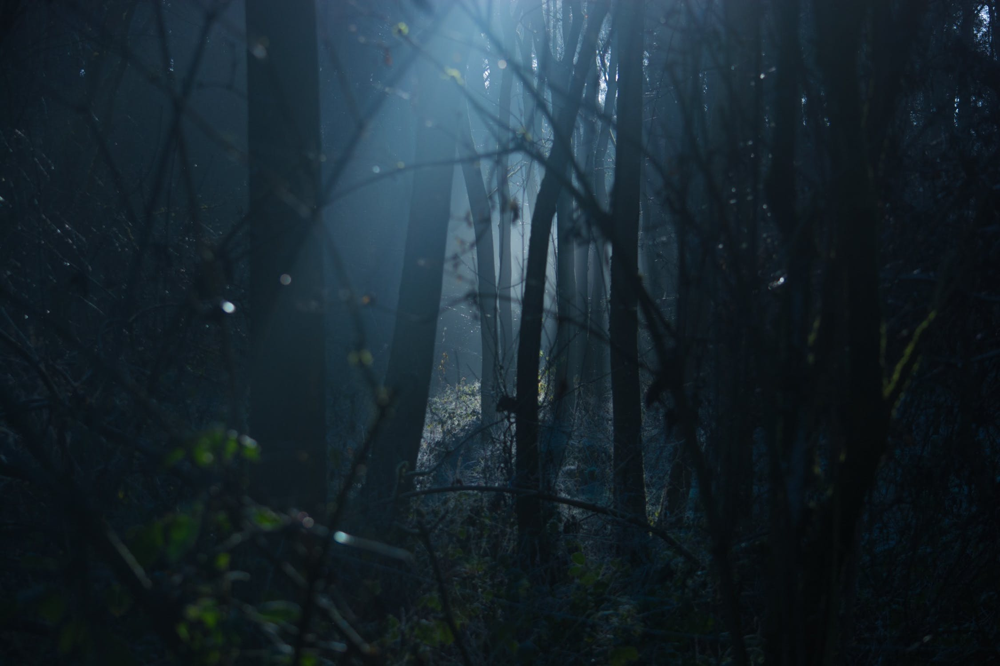
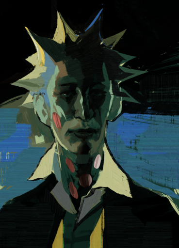
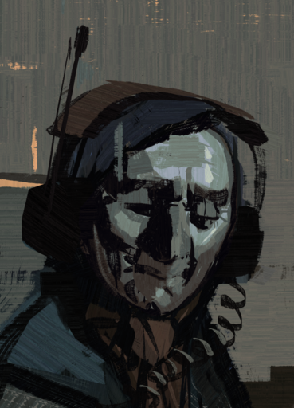
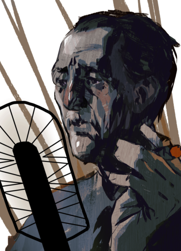
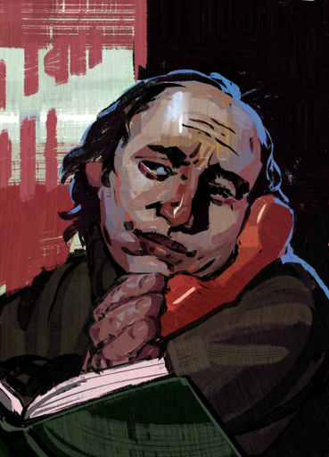

This website has some subtext that goes
here under the main title. It's a smaller font and
the color is lower contrast.

Some random information

I am all that --*and* I have radical spikes.

Sitting on the cubicle of the repeater station on the River Esperance

Jules Pidieu, nicknamed "Oldboy" by his collegues

Appearin on day three, Jamrock Public Library
"Men without ideals are only animals." "You are a violent and irrepressible miracle. The vacuum of cosmos and
the stars burning in it are afraid of you. Given enough time you would wipe us all out and replace us with nothing — just by accident."